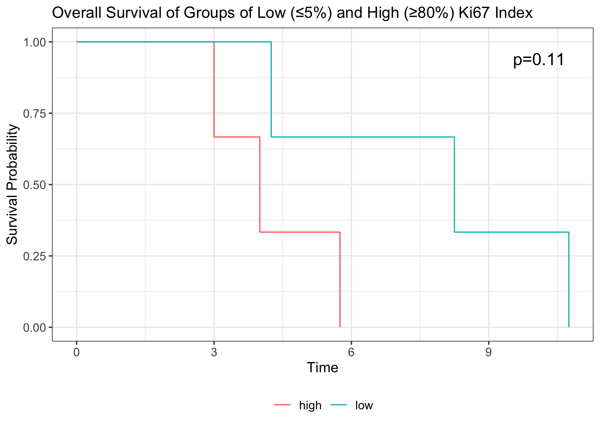
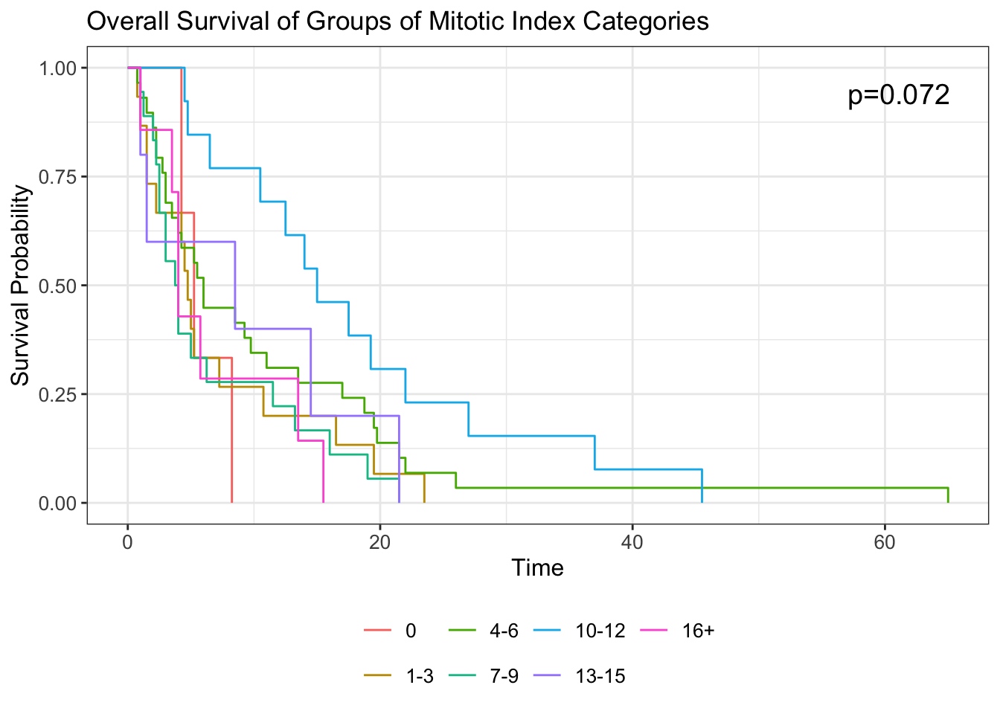

| Mitotic Index | Count |
|---|---|
| 0 | 4 |
| 1to5 | 40 |
| 6to10 | 25 |
| >10 | 27 |
Mitotic Activity vs Ki67 Summary
Table of Categorical Mitotic Index Values
Table of Specific Mitotic Activity Values
[1] "2.5" "0" "3" "10" "20" "7" "8" "11" "6" "4.5" "13" "21"
[13] "14" "1" "4" "9" "12" "5" "5.5" "7.5" "15" "3.5" "2" "16"
[25] "19" "8.5" [1] "25%" NA "8-10%" "30-40%" "20-25%" "20%" "15-20%" "10%"
[9] "4-5%" "25-30%" "90%" "30%" "50%" "15%" "40%" "80%"
[17] "70%" "8%" "16%" "10-15%" ">50%" "high" "2%" "<1%"
[25] "5-10%" ">90%" "1-2%" ">1%" ">30%" 
Min. 1st Qu. Median Mean 3rd Qu. Max. NA's
1.0 15.0 20.0 23.7 27.5 90.0 1 # A tibble: 3 × 4
Ki67_level_5 mean_survival median_survival n
<chr> <dbl> <dbl> <int>
1 <5% 8.88 9.5 7
2 ≥5% 9.19 5.25 229
3 <NA> 13.0 11.5 58

25% 75%
15.0 27.5 [1] NA "2to3" "0" "3" "10"
[6] "20" "7" "8" "11" "6"
[11] "4to5" "13" "21" "14" "1"
[16] "4" "9" "12" "5" "at least 10"
[21] "5to6" "7to8" "15" "3to4" "2"
[26] "16" "19" "8to9" 
Looking at Kaplan-Meier survival curves

Looking specific at Ki67 and overall survival
| Ki67 Status | Count | Percentage of Patients | Mean Overall Survival |
|---|---|---|---|
| <15% | 32 | 17.88 | 13.15476 |
| >15% | 132 | 73.74 | 11.91049 |
| 15% | 15 | 8.38 | 10.91667 |
High vs Low Ki67 + Overall Survival
Association Between Ki67 and Mitotic
Fisher's Exact Test for Count Data
data: table_ki67_mitotic
p-value = 0.09584
alternative hypothesis: two.sidedLooking at specific values of mitotic activity & Ki67
Running into the n = 1 problem here.